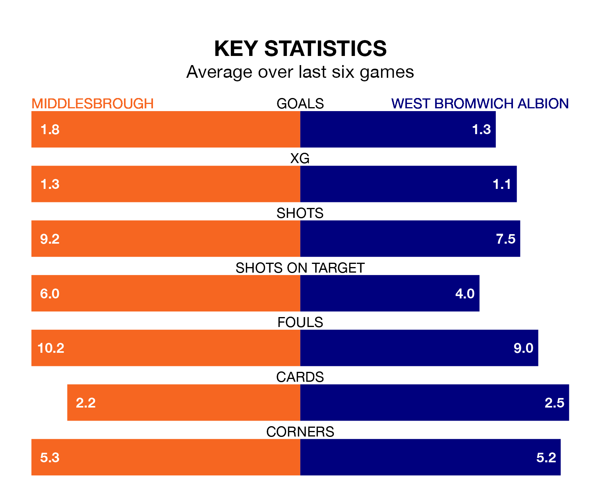

Middlesbrough host West Bromwich Albion on Saturday at the Riverside Stadium in the Championship.
In their last league match, on December 16, Middlesbrough beat Swansea City 2-1 away, with goals from Sam Greenwood and Samuel Silvera.
West Bromwich drew, 1-1 at home against Stoke City on Sunday, with Brandon Thomas-Asante scoring their goals.
In Alex Palmer, West Bromwich can rely on one of the league's safest pair of hands. He has kept 10 clean sheets in his 22 appearances this season, and no 'keeper has prevented the opposition scoring more often in the Championship.
In Middlesbrough's net, Timothy Dieng has five clean sheets in 22 games. He has conceded a goal every 64 minutes, 50% more often than the 99 minutes between goals for Palmer.
With 34 goals in 22 games so far this season, the Boro are scoring more than average in the league with 1.5 goals per game. But they are conceding more than average too, letting in 34 goals at a rate of 1.5 per game.
Albion are also above average scorers, with 1.5 goals per game, compared to a league average of 1.4. They have conceded 1.0 goal per game.
In the last 10 years, Middlesbrough and West Bromwich have played each other on 11 occasions. Middlesbrough won four of them, West Bromwich three, and they drew four times.
On average, the Boro scored 1.2 goals and the Baggies 1.2 in those matches.
Their last meeting was on August 26, when West Bromwich won 4-2 at home.
The Baggies are fifth in the table after 22 games, of which they have won 10 and drawn six, earning 36 points.
The hosts are eight places behind the away team in 13th, with nine wins and three draws putting them on 30 points.
Middlesbrough are in disappointing form in the Championship, with two wins and four losses from their last six games.
With three wins and a draw over that period, West Bromwich's form is better – they have taken 10 points from 18, compared to Middlesbrough's six.
Saturday's match will be refereed by James Linington, who has taken charge of 12 Championship games so far this season, issuing one red card and booking 57 players. He has awarded five penalties.
The last West Bromwich game Linington refereed was the 3-1 loss away at Birmingham City on October 6. He is yet to oversee a match featuring Middlesbrough this season.
Updated: 15:16, 21/12/23